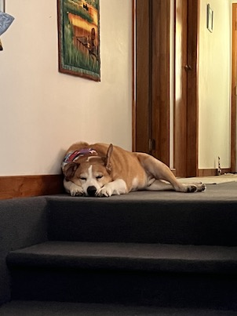
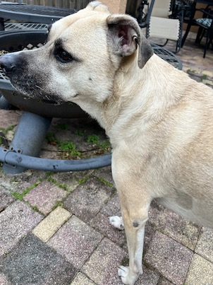
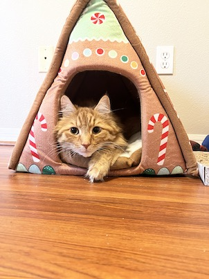

Hello from my Pets!
I have adopted four animals!
The first was Patch. He is a black cat who I adopted when he was one year old. He loves to cuddle and explore.
The next to join the family was Sammy. He was about seven years old when he was adopted. He loves to gather toys and cuddle with them. He takes breakfast and dinner very seriously.
Next up was Nea. She was adopted by my partner as a puppy and I've had the joy of adopting her as well. She loves to catch a ball and rip up toys much to Sammy's dismay.
Lastly is Winston. He was adopted as a kitten and is more cautious than Patch. He loves finding places to nap and is first up when it comes to feeding time.
Sammy - Adopted 2018
Breed:
German Shepard/Akita Mix
Nea - Adopted 2018
Breed:
Black Mouth Cur
Winston - Adopted 2019
Breed:
Maine Coon Mix
Breed:
Black Cat